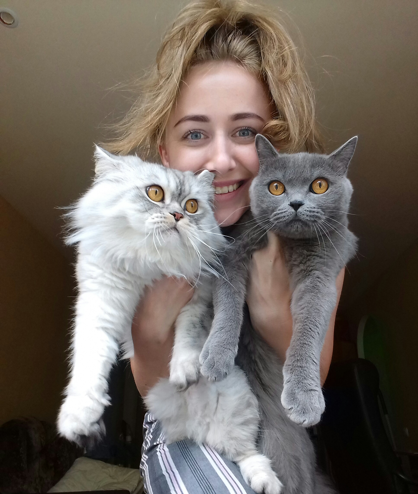

|  |
Матейчук Людмила Дата народження: 23.04.1992 (26 років) Моб.тел: (093)068-64-13 E-mail.: matejchuk23@gmail.com |
Квітень 2016 - по сьогодні -спеціаліст відділу взаємозв’язку з клієнтами в ТОВ “Лайм Мані”
Лютий 2015 - квітень 2016 - контент - менеджер
Вересень 2014 – січень 2015 – кореспондент інтернет – видання «Преступности.НЕТ».
Вересень 2010 - червень 2015 - Миколаївський національний університет імені В.О.Сухомлинського.
Освітньо-кваліфікаційний рівень: спеціаліст
Впевнений користувач ПК ( Office, Internet, 1С,Google Docs). Також є досвід роботи в WordPress.